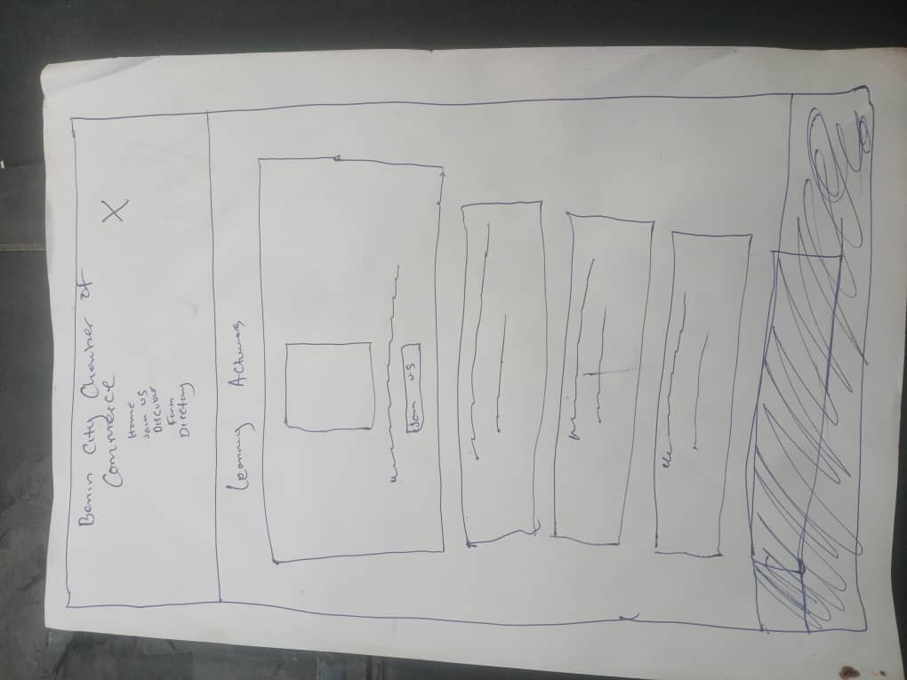
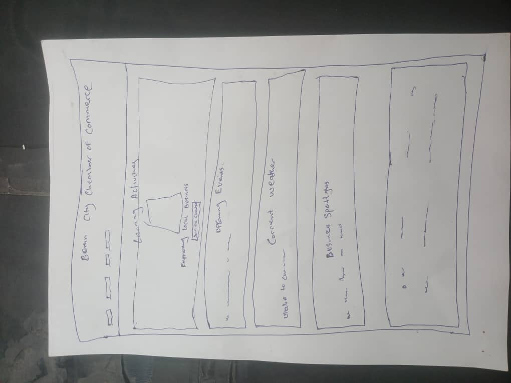

Site Name
Benin City Chamber of Commerce - This name reflects the identity and mission of supporting and promoting businesses in Benin City, Edo State, Nigeria.
Site Purpose
- Serve as a resource hub for businesses in Benin City.
- Provide information on events, networking opportunities, and directories.
- Encourage economic growth and community engagement.
Target Market
Business owners and patrons in the city of Benin City and surrounding areas who are interested in networking, economic development, and supporting local enterprises.
Site Goals
- Improve member engagement with valuable resources and networking.
- Attract new businesses and encourage economic growth in the community.
- Enhance the Chamber’s reputation as a trusted local business authority.
User Personas
- Maria: A 35-year-old boutique owner seeking networking and marketing support to grow her business.
- Diego: A 47-year-old executive looking for partnerships and economic development opportunities.
- Francisco: A new resident interested in business directories, event calendars, and community resources.
Scenarios
- A business owner visits the site to learn about membership benefits and how to apply.
- A local community member checks the calendar to register for upcoming events and workshops.
- A visitor exploring relocation options checks for information on existing businesses and quality of life.
SEO Plan
- Incorporate relevant keywords into all content and meta tags.
- Verify the site on Google Business Profile for visibility.
- Encourage backlinks from member businesses to boost rankings.
- Use Google Analytics to monitor site traffic and performance.
Color Schema
- Dark Green (#004d40) – Used for headers and navigation.
- Orange (#ff9800) – Used for buttons and highlights.
- Background Color: #f4f4f4
- Text Color: #333
Typography
- Montserrat – Used for headers to ensure a bold, professional look.
- Open Sans – Used for body text for readability and simplicity.
Design Brief
The design emphasizes professionalism, clarity, and accessibility. The site will use a responsive layout suitable for both desktop and mobile users, with strong visual hierarchy and engaging content presentation.
Wireframe
Below are wireframes representing the intended homepage layout:
 